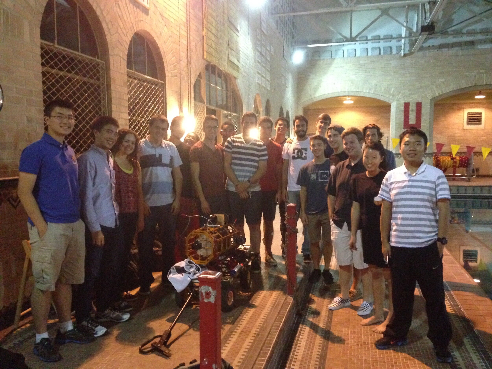
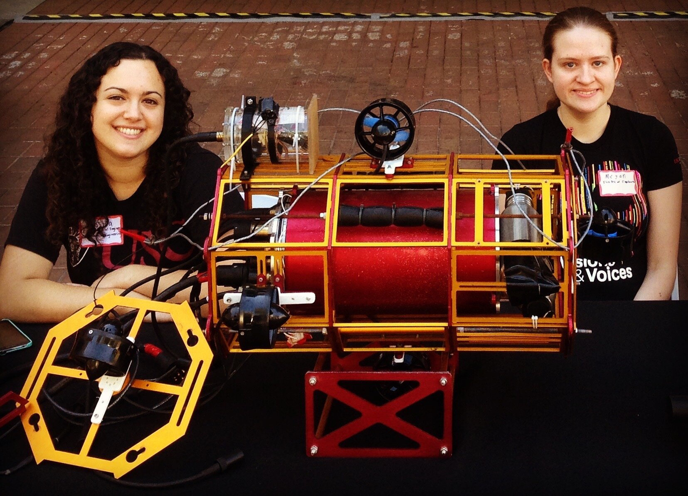

Seabee III was USC's entry into the 2015-2016 International Robosub competitions. I created the end caps to the hull of the 2015 Seabee, which sealed off its electronics from water but allowed them to connect to the cameras and thrusters. Then I captained the team in the academic year leading up to the 2016 competition. Seabee did not qualify to compete in either 2015 or 2016, but the systems engineering structure and processes I integrated into the team as captain helped direct USC AUV to be more competitive in the following years.

